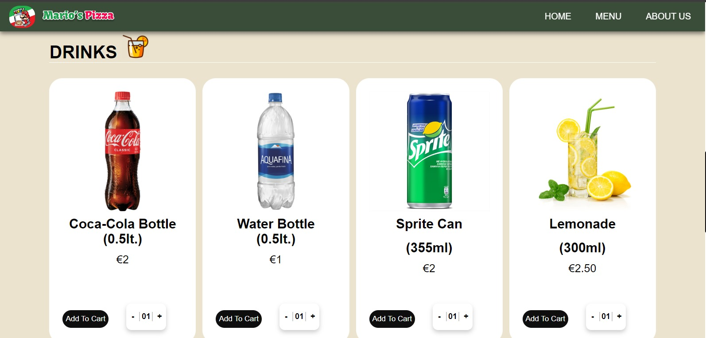

-
Technical Expertise: Gained practical experience in designing and implementing a complex web-based system, enhancing my proficiency in web development and database management.
-
Leadership and Team Management: Developed strong leadership skills by overseeing project planning and execution, ensuring alignment with project goals and timelines.
-
Problem-Solving and Conflict Resolution: Enhanced my ability to resolve group challenges effectively, focusing on constructive solutions and fostering a supportive team environment.

-
Communication and Collaboration: Improved my communication skills, facilitating clear and open discussions within the team to reach consensus and maintain project momentum.